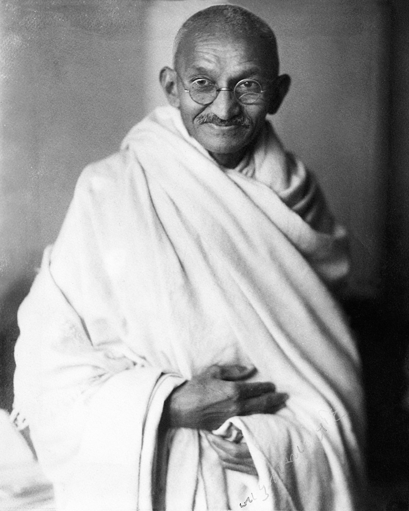

Mahatma Gandhi
2 October 1869 – 30 January 1948
Father of the Nation
Early Life
Born in Porbandar, Gujarat, Mohandas Karamchand Gandhi studied law in London. A transformative experience occurred in South Africa (1893–1914), where he faced racial discrimination and developed the philosophy of Satyagraha (non-violent resistance).
Return to India
Gandhi returned to India in 1915 and quickly became the leader of the Indian National Congress. He led mass movements including the Champaran Satyagraha (1917), Non-Cooperation Movement (1920), Salt March (1930), and Quit India Movement (1942).
Social Reform
Beyond politics, Gandhi fought against untouchability, Hindu-Muslim unity, women's empowerment, and rural development. He championed Khadi and swadeshi (self-reliance) as tools of economic independence.
Philosophy
His philosophy of Ahimsa (non-violence) and Satyagraha (truth-force) inspired civil rights movements worldwide, including Martin Luther King Jr. in the US and Nelson Mandela in South Africa.
Legacy
Gandhi's birthday (2 October) is celebrated as the International Day of Non-Violence by the United Nations. He remains an enduring symbol of peace, justice, and the power of non-violent resistance.